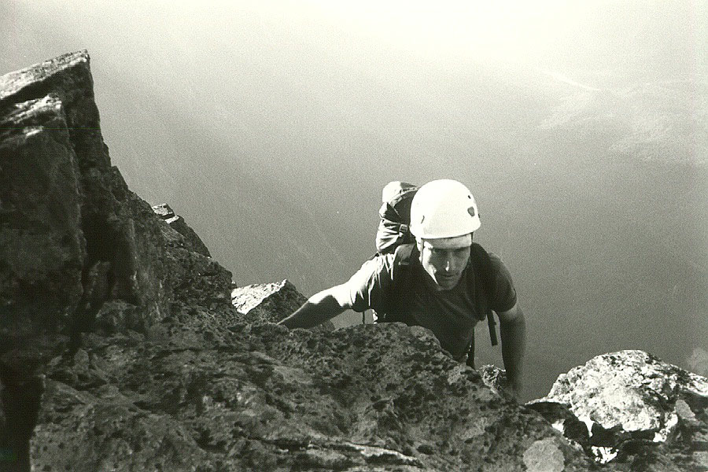
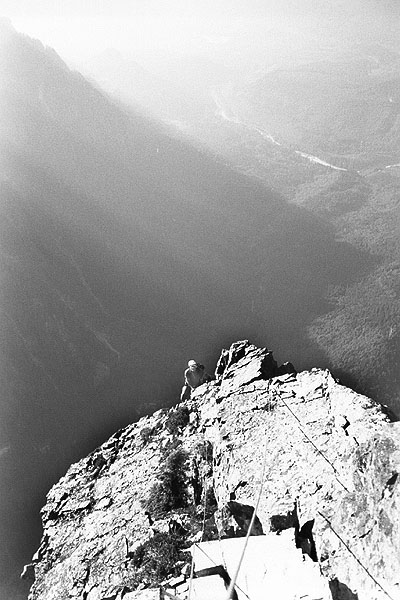
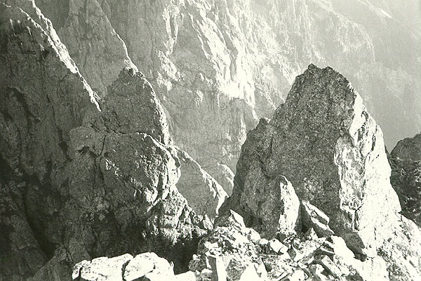
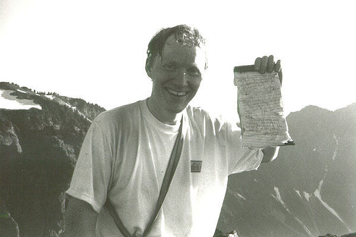
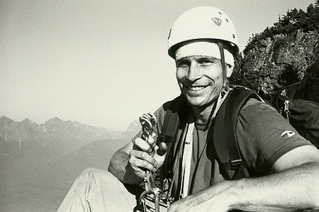
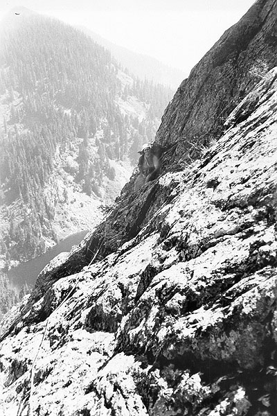
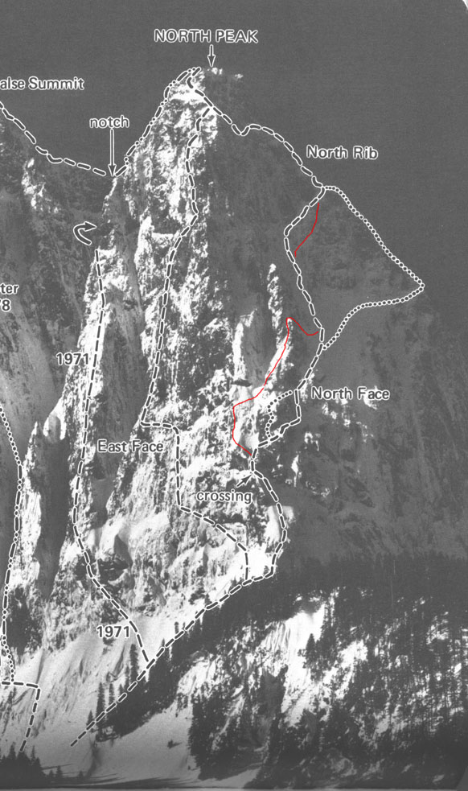

Mt. Index, North Peak
- Mt. Index, North Peak
- August 11, 2001
It’s the forced bivy season again. The time when good weather and a lack of good excuses forces us to load the pack with a mixture of anticipation and dread. A cryptic route description, climbing gear, food, water and a sweater are all we need to get ourselves in over our heads. Go now, before you reconsider. Did you forget something? You didn’t need it, we’ll share mine.
We need a new scale to describe climbing on Mt. Index, to supplement the YDS. There is a BW (bushwhack) rating system, but it is too oriented to horizontal terrain. I propose the following, and I’ll use these monikers in the text:
- Annoying - pokes in eye, slaps in face, thorns around arms, insects biting the ankles.
- Taxing - one arm pull-ups on tree limbs above smooth, mossy rock faces. 5th class/A0 moves.
- Frightening - often combined with mossy, crumbly rock. Requires great faith in that one, thin limb you are pulling on. 5th class moves.
- Wet - One pitch might induce hypothermia later.
The brush on Mt. Index is mostly BAT, occasionally BTF. Rappelling brush pitches can be very time-consuming due to tangling, especially for double ropes.
Reasons to climb the North Peak? I guess this is what drove me:
- Once it was considered very difficult - even Beckey had to make several attempts. Accidents and mishaps plagued the ancient ones.
- You can see it from the road. In fact, it dominates the view from the road. And it’s a road I travel often, on trips to Leavenworth or skiing. Won’t it be great to drive under it and look up with satisfaction? Especially when I’m old and gray, and a grandchild is vomiting on the back seat.
I had scouted the approach in June, finding a faint trail through a tunnel of brush that got onto the ridge crest. Steve followed, cursing mightily at the thorns. When he stopped cursing, it was only because a huckleberry, raspberry or boysenberry had fallen into his enraged mouth, and he needed to chew for a few seconds. Then we had some fairly nice scrambling for about 400 feet to the obvious start of the route. I was overjoyed not to be lost yet. The ancients tell of getting lost on the confusing early pitches. I thought this might happen to us too, but at least we could get lost from the same place as everybody else!







Steve belayed me around an exposed corner which ended at a wide gully. Filled with uncertainty at a multitude of choices, I choose 1 of 3 rap stations to belay from. Steve began following his nose up and I became an annoying “belay seat driver,” whimpering about being lost one pitch up! Can you tell I’m obsessed with not getting lost? Anyway, Steve did some hard climbing, finding a few fixed pins along a slabby face. We played twister at an awkward belay as I tried climbing to the left (too hard), the right (too sketchy), then straight up (hard and sketchy, but seemed like a good idea at the time). Mossy, steep, loose blocks gave way to hanging limbs and smooth faces. Drops of sweat in my eyes, I could hear Lake Serene laughing at me for my insouciance. I struggled upward into bleaker, overhanging terrain, and was greeted by a “Thank God” opportunity to traverse right to easier ground. The friction created by the rope became so great I had to stop and haul several feet to make it to a sling belay in a gully. Steve came up, impressed with my idiocy, and found a way up rocks into a true hanging jungle. Bits of tree and curse words rained down on me, and as I climbed the pitch, eerie moans filled the air. This was Steve, using all his strength to haul the rope through enormous drag. I remembered a “Little House on the Prairie” episode where they gave a woman a spoon to bite on during childbirth. The mountain was already taking everything we had!
Grimly, I continued up the brush, soon reaching a saddle fraught with conclusions. Clearly, we were now above the fabled “North Face Bowl,” which we should have been scrambling merrily up. Steve arrived and we decided to rappel down to the bowl to get back on route. This was harder than it looked, but finally we were in the bowl, scrambling like merry 80-year-old men, huffing and puffing with the high altitude of 4200 feet. I climbed a fun pitch of real rock up a gully to a belay station, then Steve left the gully for what we hoped was the “right-trending ramp” leading to the spectacular North Rib. As his cries became increasingly profane, I knew we were back in Brushworld. One thing about brush climbing, is that there is no substitute for hurling curses and violence at the flora. This is essential for upward progress. A flailing rock climber gets nowhere, but only the flailing brush climber goes up. And so we flailed for two pitches, reaching the crest in hot, late afternoon sun. It was late, but we knew that if we retreated, we would never come back, and the mountain would mock us as we drove sullen teenagers to Steven’s Pass in years to come. We knew we would have to bivy. Only water would be a problem. Already, we wondered if licking wet moss would provide fluids.
So now that we’d humbled ourselves, the mountain delivered a true gift: rock climbing! The rib was steep and exposed, with good protection and fantastic views down a face on the west. We climbed 3 pitches which finally restored a smile to my face. “Thank you,” I said. “Thank you very much.”
Beautiful exposed scrambling along the upper ridge crest led to the summit rocks, and a fantastic view to the Middle and Main Peaks. We were at 5300 feet, such a low elevation for rugged alpine grandeur. “Holy cow Steve, no one has made this climb since 1998!” But then I noticed there was no pen in the summit register. Oh. As happens with increasing frequency, I imagined dozens of climbers lightly making the trip in 8 hours car to car, expressing bewilderment at the great toils Steve and I endured. The rule seems to be, the more I do harder climbs, the more I find everyone else is faster and more competent. Here is the conversation that played out in my mind:
“Hey, we climbed the North Peak,” I said.
“Good times, dude! My buddy did that last year, he said it was a rilly long day,” said the imaginary hippie climber in my brain.
“Actually, it took us two days”
“Whoa! But you could take it easy, relax a little bit. That’s cool.”
“Actually, we went as fast as we could.”
“Yeah, but you had all this bivy gear, tough work little dude!”
“No, we tried to do it in a day, we had no bivy gear.”
Silence from my imaginary friend…
“Yeah…”
His equilibrium restored, imaginary friend says “Good times!”
I definitely pay too much attention to what other people think. How can these petty worries intrude on our moment of glory! It was a worthy summit, and we were proud to be there. All the register entries talked about how good it felt to be on top of a mountain they drove by every day. It did feel good.
We scrambled down to the technical rib, finding 16 inches of flat ground we could lie on. A bomber hex placement held our gear, and the orange-pink sky held our attention. I finally ate my lunch, and Steve produced a bag of shrunken bananas, each 3 inches long. We spent the night alternately watching shooting stars, napping, shivering, eating shrunken bananas, sipping water, and wondering who was driving around on the Index-Galena Road at 3 am. We heard dogs barking in the valley, almost 5000 feet below. In fact, they kept us up all night! I considered stopping at one of the “dog houses”, if I could find one, and telling them to keep their dogs quiet please, people are trying to sleep!
Around 5:30, it was light enough to travel, so Steve led along the ridge to a rappel point. 3 rappels got us off the ridge, then a brush rappel got us to a station at the head of a gully. A 200 foot rappel here got us down a long ways, but then the rope got stuck. We pulled very hard, but finally conceded we would have to climb the rope. I climbed the gully, clipped into both ropes with tiny ascenders. I made it to the brushy ledge on top, and could find no reason for the rope to be stuck. I rappelled to an intermediate point, pulled the ropes, and rappelled down to Steve. Then I sat like an exhausted cow, dazed at the exertion required to get the ropes.
The next rap got us into the North Face Bowl, then we looked around for the “proper” route and found two more double rope rappels, the second of which somehow deposited us in unvisited, bleak terrain. By now it was noon, and thirst was a driving concern. We decided to rappel from anything we could, leaving any gear we needed to. Steve boldly rappelled over a cliff from our tree anchor, and a long time later I heard a faint “Off!” I began rappelling, but the rope was oddly under tension, and leading to the left. Twice I lost contact with the rock and swung into a brushy gully, bleeding from cuts created by sharp snags. At the halfway point, a final steep cliff lead to Steve, standing apprehensively on steep slabs. He tied a knot in one end of the rope, since when I reached the slabs the rope would zoom through my device because it only reached the ledge due to stretch. Did I say Steve was bold? Man. Anyway, we retrieved the rope, and scrambled down and right to reach an area near the start of the first pitch. On a final 20 foot 5.0 traverse, I lost my nerve and got a belay from Steve. Two more double rope rappels put us at the brushy start. Covered in cuts and scratches, eaten alive by biting flies, dripping sweat we shouldn’t have, water was the one thought on our minds. We retrieved our boots, and hiked down to a snowfield for heavenly drips of cold water. We drank enough to get a stomach ache, and made for the trail down to the cars. Steve took the new trail, and I took the old one. He didn’t want steep, and I didn’t want long. I got to the car, where a young man boasted that he had run all the way up and down the trail. He told me that it really brings out something from inside, and that I should try it sometime. It can be rewarding.
A very special thanks to Steve, and to Mt. Index herself.
Technical info about the climb (note: this is how we did it, we were “off-route” for pitches 2-5, and possibly 7-8):
2 pitches of 3rd/4th class scrambling above brush trail
- p1 - from anchor around corner to rap station
- p2 - from station up difficult rock to piton belay (5.7)
- p3 - straight up brushy rock then traverse right to belay in gully (5.7, BF)
- p4 - up and right into thick brush (5.3, BA/BT)
- p5 - up brush to saddle (5.0, BA)
- rappel from saddle to bowl
- scramble 3rd class pitch
- p6 - enjoyable pitch in gully to belay at saddle (5.3)
- p7 - traversing right on brushy ramp to tree belay (5.6 traverse with piton, BA/BT)
- p8 - through brush to saddle and trail (BT/BF)
- p9 - steep, enjoyable rock on crest to anchor (5.5)
- p10 - another great pitch to level crest (5.5)
- p11 - short walk along knife-crest to trees (4th)
- scrambling up heather and rock to false summit, climbing over some summits and traversing others. Steep trail leads to summit rocks.
Downclimbed all scrambling to bivy location near knife-ridge.
The descent:
- Scramble down from summit to technical ridge.
- 1 lead along ridge to rap anchors.
- 3 single rope rappels to get off ridge
- Some hiking, then 1 single rope rappel in brush to anchor at top of gully.
- 1 double rope rappel to anchor on first gully pitch.
- 1 double rope rappel to “trail” in bowl.
- Some downclimbing in the bowl.
- 3 double rope rappels from tree anchor to root anchor above cliff, to brushy ledge on unfamiliar terrain (60 meter ropes required).
- 4th class scrambling, Steve led and belayed me over an exposed crossing.
- 2 double rope rappels from funky station below first pitch to brush trail at start of route.